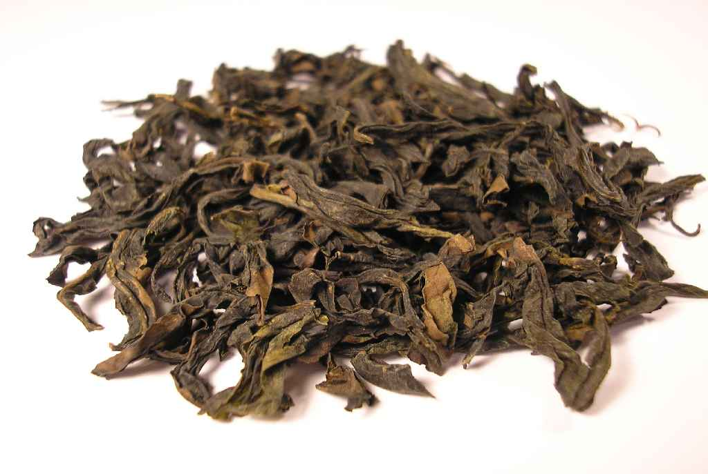

Articles Santé
Les bienfaits du thé vert
Source: Wikipédia
Réduction du stress
Des travaux menés par une équipe japonaise suggèrent que les consommateurs de thé vert ont un niveau de stress moins élevé. Atsushi Hozawa et ses collègues de l'université de Tohoku ont suivi plus de 42 000 Japonais dont plus de 2774 souffraient de stress psychologique.
En regardant de plus près leur consommation de thé vert, les chercheurs se sont aperçus que ceux qui en buvaient entre cinq tasses et plus par jour avaient 20 % de risque en moins de souffrir de stress par rapport à ceux qui en buvaient moins de deux tasses par jour (attention, au Japon, une tasse de thé vert fait 100ml et est réalisée par une infusion d'en moyenne 1 minute de 5 grammes de thé vert japonais, type Sencha par exemple).
À noter que dans cette étude, les personnes qui consomment le plus de thé vert ont également un risque de pneumonie diminué de 47 % et de cancer du sang de 42 %.
Enfin, une autre analyse ayant porté sur des sujets de plus de 70 ans, montre une diminution de 44 % du risque de dépression modérée chez les amateurs de thé vert à hauteur de quatre tasses par jour.
Attention cependant, comme dans beaucoup d'études, il ne s'agit là que de corrélations, aucun rapport de cause à effet n'ayant été démontré. Par exemple, il est possible que les consommateurs de thé vert aient un mode de vie différent qui impactent ces résultats, et rien ne permet de savoir ce qui est dû au thé vert ou au mode de vie de buveur de thé.
Maladies cardiovasculaires
Le thé vert contient un certain nombre de polyphénols, dont l'abondance peut atteindre 20 % de la matière sèche, jouant le rôle d'antioxydant. Plusieurs études semblent démontrer une certaine efficacité de sa consommation dans la diminution du risque de contracter une maladie cardiovasculaire. Il diminuerait également le taux de cholestérol sanguin. Ces antioxydants pourraient être cependant neutralisés par la caséine présente dans le lait.

Cancers
Son rôle dans la prévention des cancers est beaucoup plus controversé. Les cultures cellulaires et les modèles animaux montrent que l’épigallocatéchine-3-gallate (EGCG), le principal polyphénol présent dans le thé vert, possède une puissante activité anti-inflammatoire et anti-proliférative capable d’inhiber sélectivement la croissance cellulaire et d’induire l’apoptose dans les cellules cancéreuses sans affecter les cellules normales. Par contre, l'efficacité réelle est loin d'être prouvée chez l'être humain, même s'il est largement utilisé dans cette indication (notamment dans la prévention du cancer du sein au Canada).
Une étude présentée le 11 janvier 2010 lors d'une conférence parrainée par l'American Association for Cancer Research (AACR) et l'International Association for the Study of Lung Cancer (IASLC) tendrait à démontrer que le thé vert, dans une certaine mesure, protégerait les fumeurs du cancer des poumons. Le Dr Lin Hsin-I, de Chung Shan Medical University à Taïwan, et ses collègues ont recruté 170 personnes souffrant de cancer du poumon et 340 patients sains comme témoins. Les participants ont rempli des questionnaires concernant leurs habitudes de vie : le nombre de cigarettes fumées par jour, le nombre de tasses de thé vert consommées par jour, leur apport alimentaire en fruits et de légumes, les modes de cuisson et les antécédents familiaux de cancer du poumon. Les résultats montrent que les fumeurs et les non-fumeurs qui ne boivent pas de thé vert sont cinq fois plus susceptibles de développer un cancer du poumon que ceux qui boivent au moins une tasse de thé vert par jour. Les fumeurs qui ne boivent pas de thé vert sont douze fois plus susceptibles d'être diagnostiqués d'un cancer du poumon que ceux qui boivent au moins une tasse de thé vert par jour.